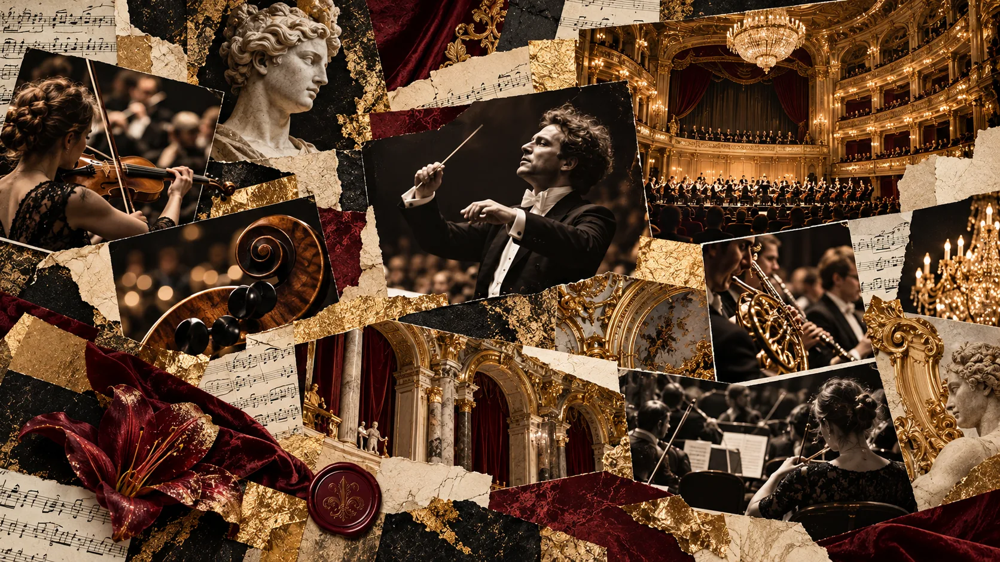

VALLEYS · SYMPHONY
01 / 03V / S
Густав Малер
Симфония № 2
«Воскресение»СИМФОНИЧЕСКИЙ СЕЗОНVALLEYS
Густав Малер
Симфония № 2
ПодробнееБИЛЕТЫ ПОЗЖЕ

VALLEYS SYMPHONY ORCHESTRAConcert season
Мир симфонических произведений. Три программы для демонстрации оформления.
ПРОГРАММАConcert calendar
Программы являются примерами наполнения. Даты, дирижёры, солисты и билеты не назначены.
Густав Малер
Вольфганг Амадей Моцарт
Сергей Рахманинов
Для выбранного фильтра концерты не найдены.